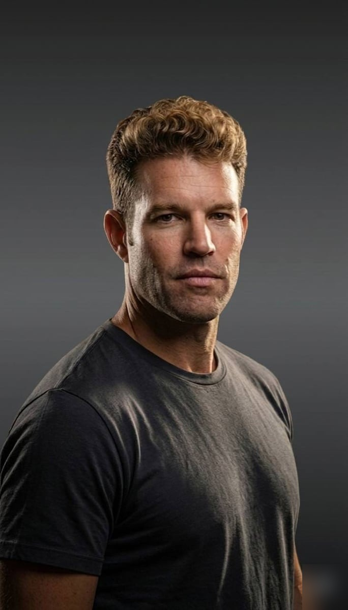

ANDREWCUNLIFFE
Designer & agent choreographer building interfaces where AI empowers human intelligence. Senior Staff at Intuit. Humans keep the judgment. Models keep the toil.
“Above the fold” was always a dumb rule. Modern design is about fun. Click/tap or keep scrolling for the work.
I never fit the digital product designer box. Never followed the process perfectly. The work changes, the tools change — pick what fits. So I design at the seam — where humans keep the judgment, models keep the toil, and the interface earns trust through delight. I never fit the digital product designer box. Never followed the process perfectly. The work changes, the tools change — pick what fits. So I design at the seam — where humans keep the judgment, models keep the toil, and the interface earns trust through delight.
“I don’t take myself that seriously but admit that sounds cool.”

- Senior StaffIntuit · VEP
- CreatorRaven MCP
- TechBlack Sheep Jiu Jitsu
Eight years at Intuit. Currently designing the HI side of our AI+HI company strategy as part of the Virtual Expert Platform — Intuit’s AI-first “done for you” system inside QuickBooks and TurboTax. Before Intuit, startups and the 82nd Airborne. Marin native, long-time San Franciscan. Most importantly: Dad.